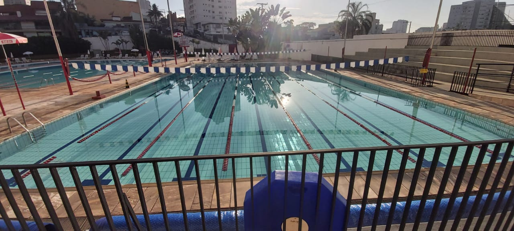
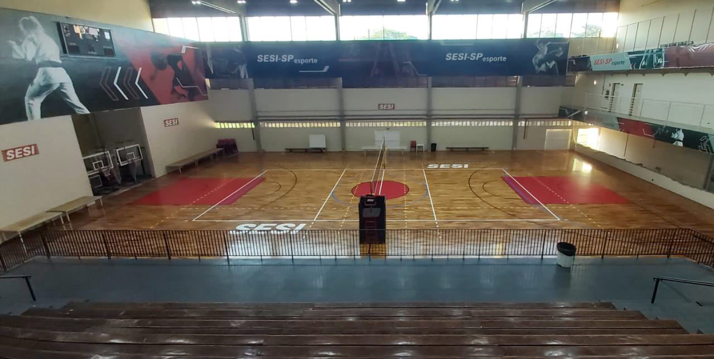
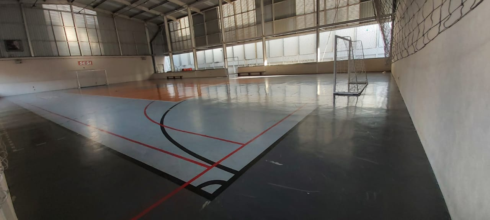
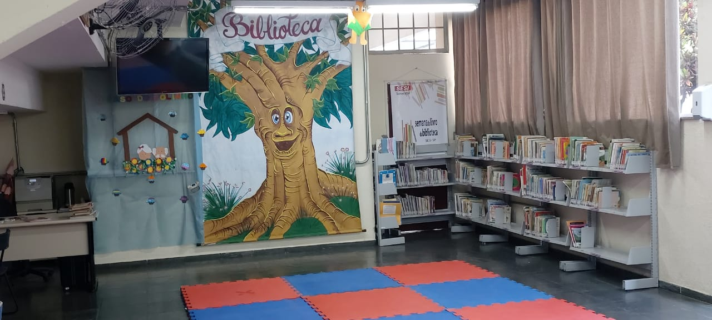
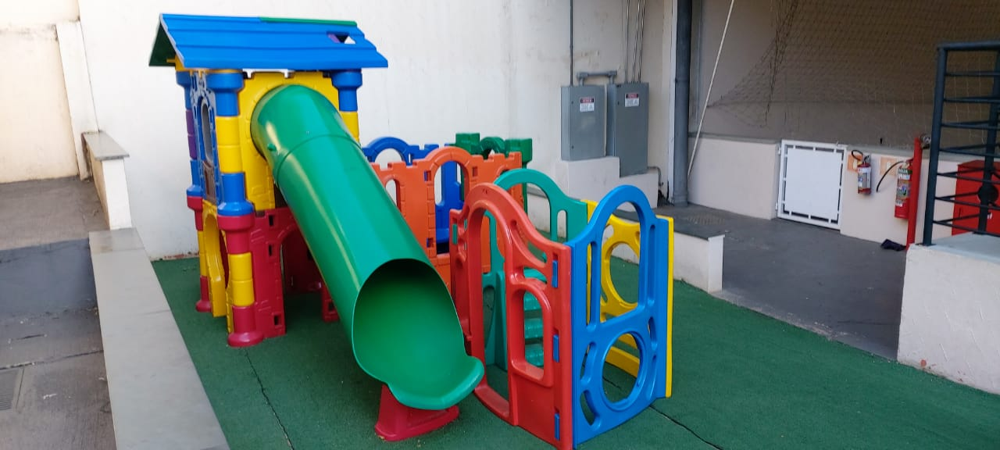
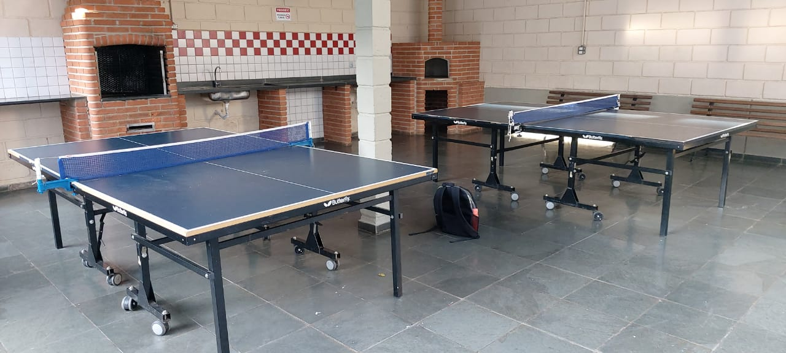
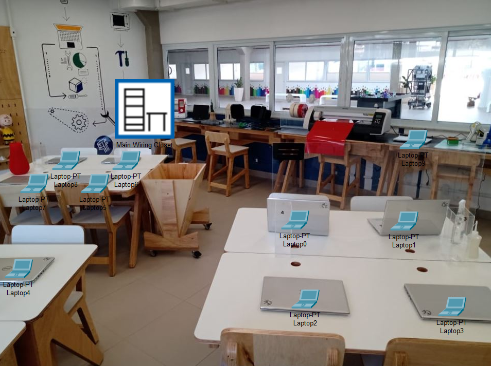
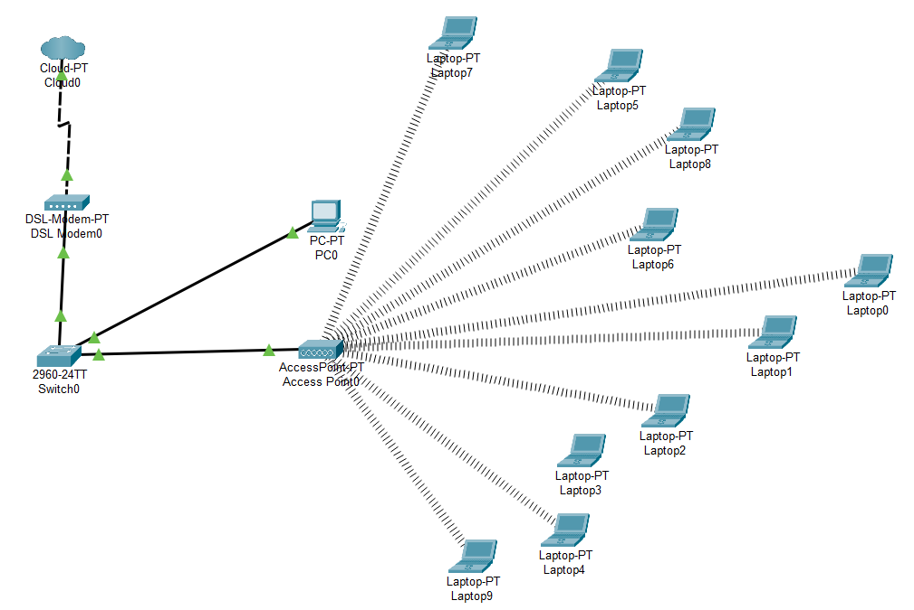
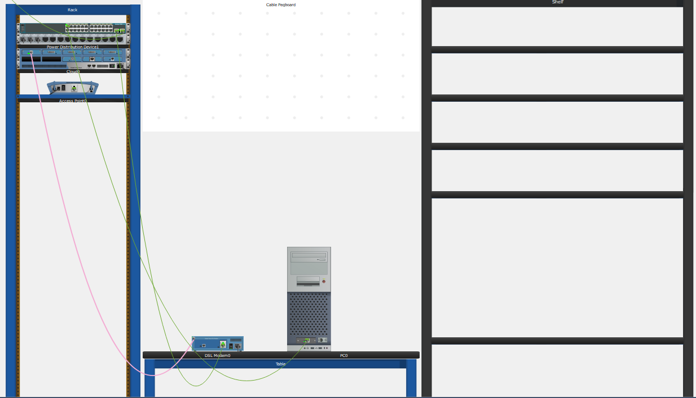

O Serviço Social da Indústria (SESI) é uma rede de instituições e de atuação em âmbito nacional. Foi criado em 1 de julho de 1946 com a finalidade de promover o bem-estar social, o desenvolvimento cultural e a melhoria da qualidade de vida do trabalhador que atua nas indústrias.
No Sesi Mangal 123(Sorocaba) é possível encontrar:
Piscina olimpíca
Quadra de vôlei
Quadra de futsal
Biblioteca
Playground
Área Gourmet
Abaixo, você ia ver um conceito de como seria um servidor no espaço maker, feito atráves do "Cisco Packet Tracer"
Parte físisca
Parte lógica
Main Writing Closet
